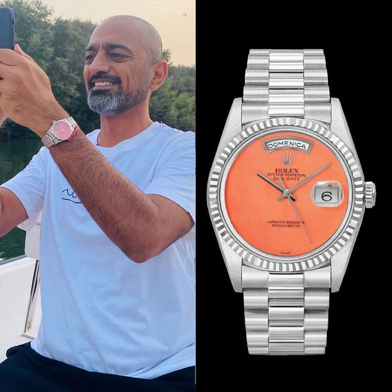

Home · The Collection · Patek Philippe

Patek Philippe · 5959P-001
Patek Philippe Split-Seconds Chronograph 5959P
RR · Very Rare — 125 pieces
| Movement | Manual-winding, Caliber CHR 27-525 PS |
| Case | Platinum 950 |
| Dial | White with Breguet Numerals |
| Case size | 33mm |
| Power reserve | 55 hours |
| Complications | Split-seconds rattrapante chronograph, 30-minute counter |
| Year | 2015 |
| Valuation | US$ 375,000 |
The Patek Philippe 5959P-001 is a masterpiece of haute horlogerie, featuring one of watchmaking's most complex complications: the split-seconds chronograph. This platinum timepiece allows the measurement of multiple events simultaneously, with two chronograph hands that can be stopped independently. The elegant white dial features applied Breguet numerals.